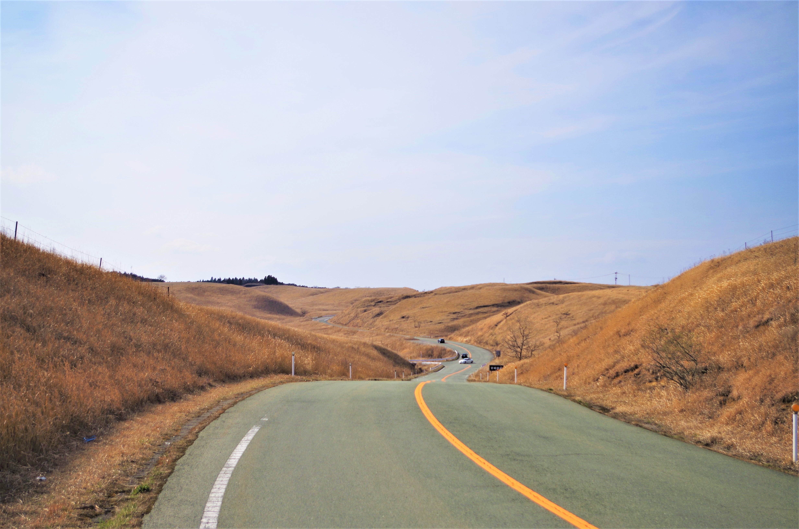
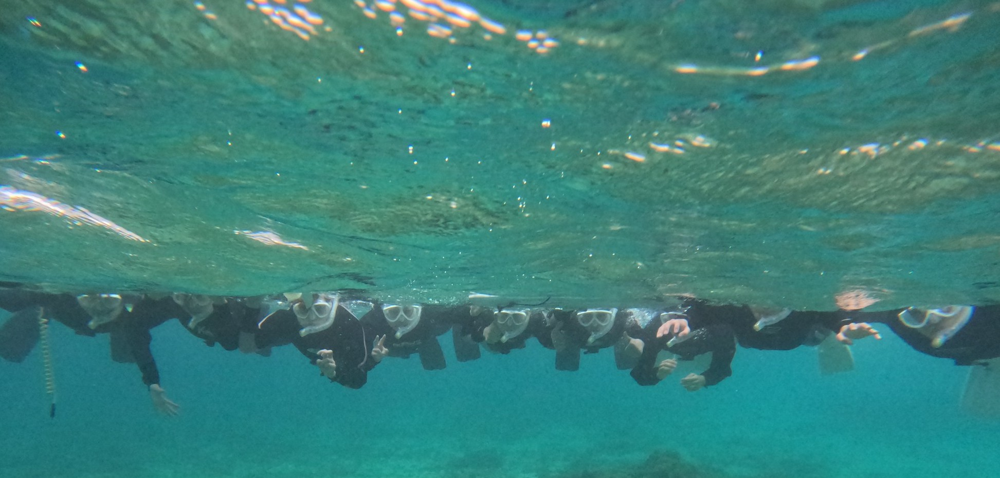
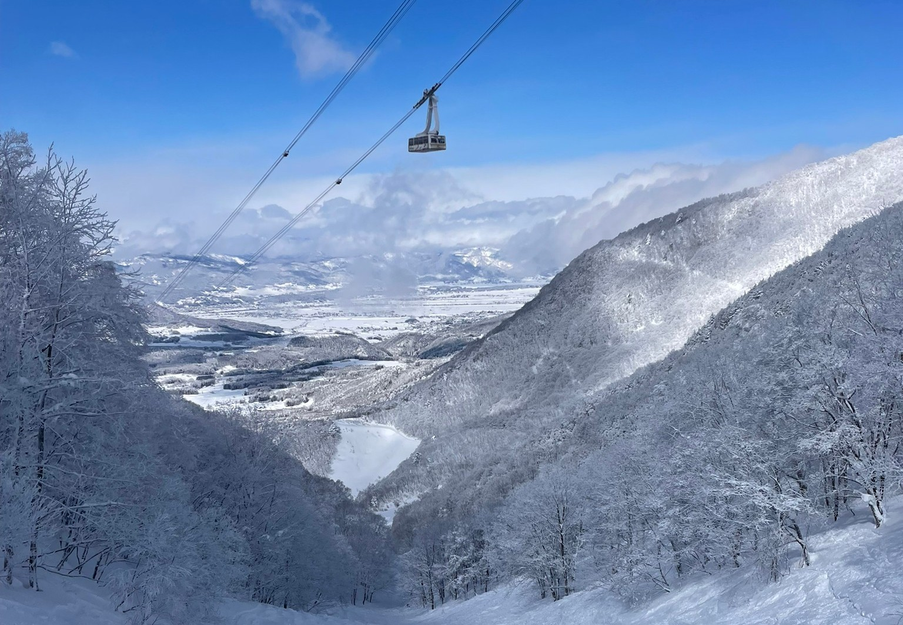
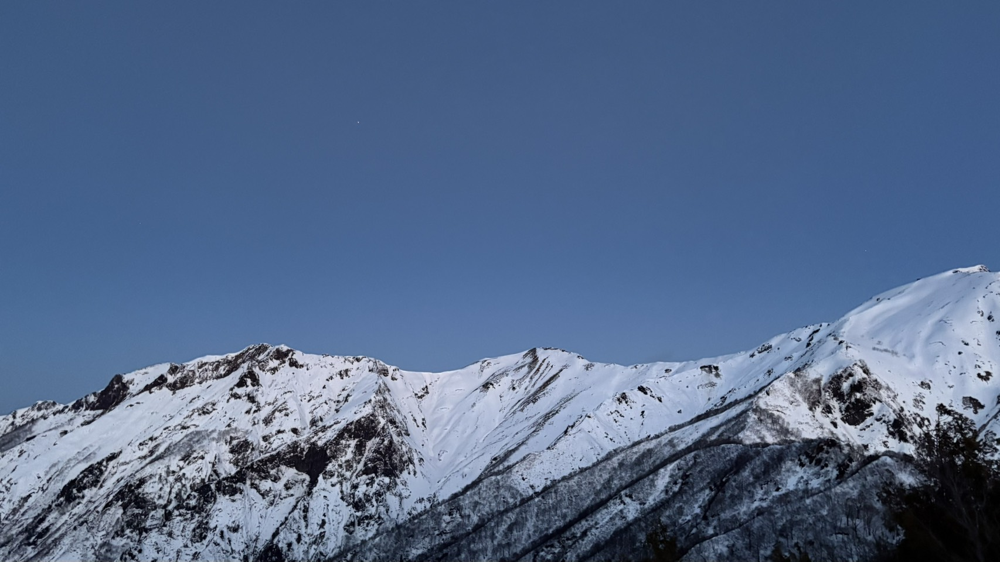
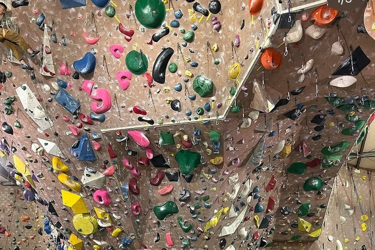
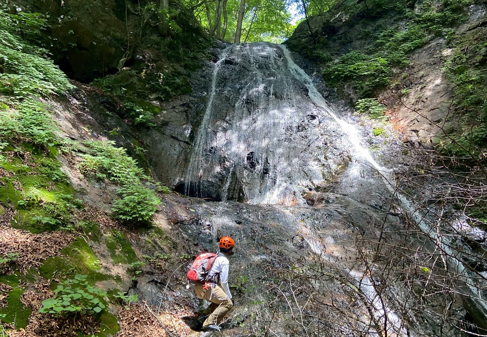

活動内容
普段の活動
週1回 昼休み（山行計画・安全講習）
登山企画の反省や安全講習などを実施します。履修状況に合わせて半期に1回曜日が変わります。
対面参加が基本ですが、zoomでも参加可能です。
週2回 1限または5限（各自の都合に合わせて）
迎賓館周りのランニングや筋トレを実施しています。自分の空いている曜日に参加できるので、授業やバイトとの両立もできます！
月1〜2回（泊り・日帰りメイン）
授業期間は毎週末の登山企画に参加します。長期休みはノルマを達成すれば自由に企画に参加できます！
年間予定
最新の情報はSNSまたは説明会でご確認ください。
新歓山行
登山体験会を通して登山の楽しさを実感してもらいます。
机上講習・新歓合宿
登山知識の講習や初めての宿泊形式での合宿を行います。
強化プレ山行
夏の大縦走に向けて体力・技術の向上を目指します。
強化山行、上南戦
強化プレよりレベルアップ。他大学との交流戦（上南戦）も盛り上がります。
夏休み企画、大縦走、夏期講習
日本アルプスを数日間かけて登ります。学年ごとの企画や縦走もあるかも？
夏休み企画、大縦走、富士登山
夏の締めくくり。達成感と共に一生モノの思い出が作れます。
10月山行、OB山行
OB・OGの先輩方との交流や、秋からの新入部員向け山行を行います。
11月山行
紅葉シーズン。都心から近い山々へ、景色を楽しみながら登ります。
12月山行、冬期講習、雪上訓練(任意)
冬装備の使い方や歩き方を基礎から学びます。
休み
試験期間のため山行なし。
雪山登山(任意)、スキースノーシュー、サイクリング
スキーや自転車など、幅広いアウトドア活動で冬を満喫します。
離島遠征、屋久島縦断
1年の締め。屋久島や伊豆諸島など、遠方の山へ遠征します。
サイクリング・離島遠征・スキー企画



特に春休み(2,3,4月)には自由度の高い企画を堪能できます！
■サイクリング：しまなみ海道など
■離島遠征：屋久島、奄美大島、小笠原諸島、利尻島など
■スキースノボ：かぐらスキー場、宝台樹ヒュッテなど
研究会



部内に研究会があり、希望者は入会して技術を高めることができます！
登山経験が豊富なコーチの方が指導してくださるので、未経験でも問題ありません！
雪山登山、ボルダリング、沢登りなどを楽しめます